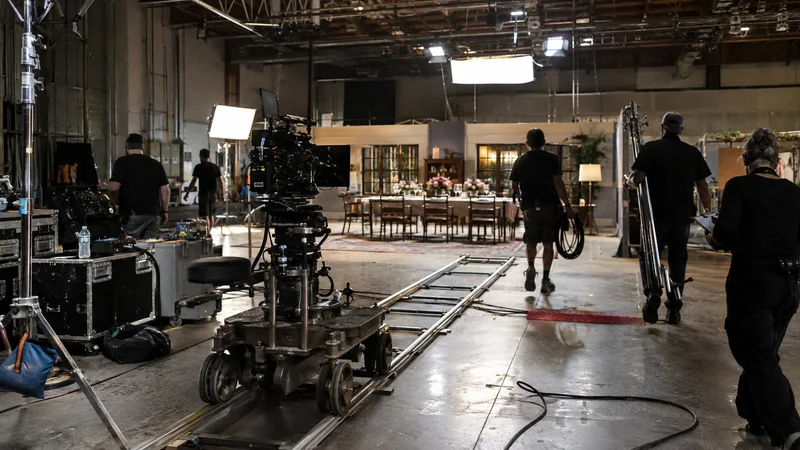

About Us
Otium Nexus Group is a home for creative people who make things worth experiencing. We are headquartered in London, with offices in Amman, Beirut, Cairo, Doha and Riyadh. We create productions and events for clients around the world.
Our strength lies in how we combine two perspectives. We have the experience of an international group: the standards, the discipline and the ambition to take on projects of any scale. And we have the knowledge of people who know each place well: the right supplier, the right permit, the right way to welcome a guest. Together, they mean our clients never have to choose between a global outlook and a local touch.
The team is as varied as the work. Our people come from many nations and have built careers in film, music, television, live production, hospitality, design, logistics and business development. Having that range under one roof lets us look at every project from many angles, and it is the reason we can deliver anywhere in the world with the same care.
Today the group trades through two companies. Otium Productions creates films, television series, documentaries, web-series and video podcasts. Otium Events delivers everything from large-scale concerts to exclusive, high-end private dinners.
